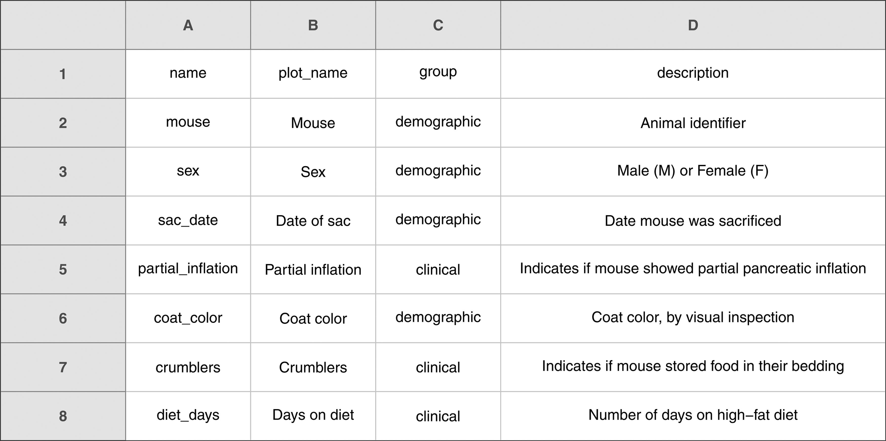
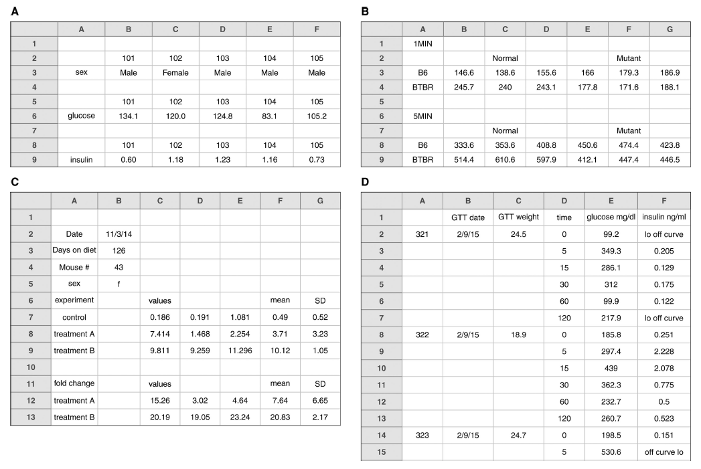
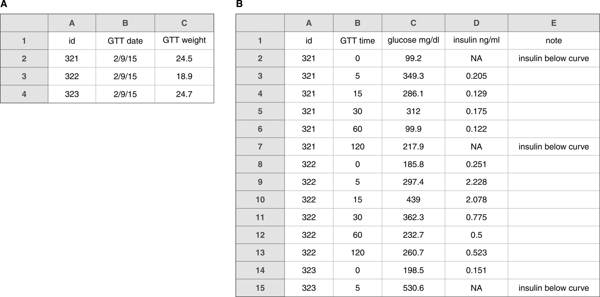
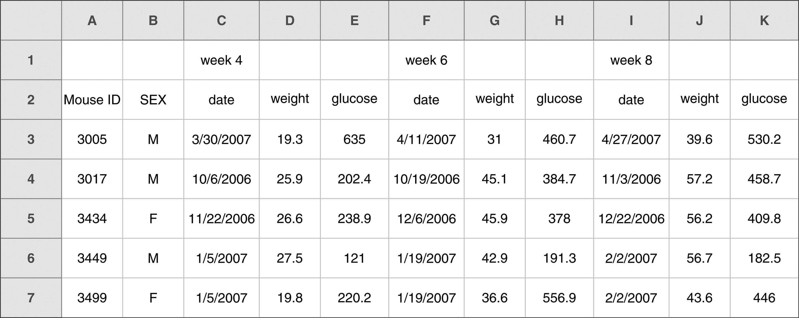
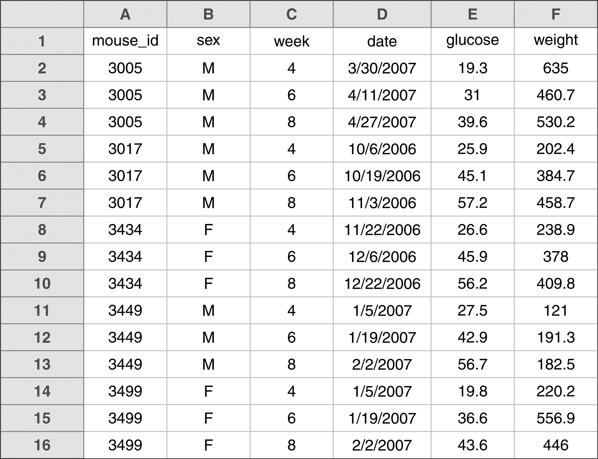

Data organisation in spreadsheets
Organising data in spreadsheets seems straightforward, but improper techniques lead to errors and inefficiencies fast. This plate covers some fundamentals for organising spreadsheet data, drawing from W. Broman and K. H. Woo's "Data Organization in Spreadsheets" in The American Statistician. These principles ensure clarity, consistency, and ease of analysis.
Be consistent
Consistency is crucial. Maintain it across your sheets:
- Consistent values for categorical variables. Use
"male"and"female"OR"M"and"F"— never mix. Same for missing values: pick one notation (e.g.NA, a favourite in R, or a hyphen-) and stick to it. Never explain why a value is missing in place of the value — use a separate column for that. - Consistent naming and layouts.
- Variable and subject names. Same format throughout. Choose underscores OR hyphens for spaces in names, but not both.
- Date formats. Use a consistent format — preferably ISO 8601 (
yyyy-mm-dd). - Phrases in notes. Uniform.
- No extra spaces. Extra spaces inside cells cause subtle errors in analysis.
Succinct names for subjects
Clear, concise names are vital for readability and analysis.
- Avoid spaces. Spaces cause errors and inconsistencies when importing data. Use underscores (
_) or hyphens (-) instead. - Be consistent. Pick one of underscore or hyphen and stick to it. Mixing makes data-processing scripts more complicated and error-prone.
- Avoid special characters. They interfere with parsing and cause unexpected issues. Stick to letters, numbers, underscores, and hyphens.
| Good name | Good alternative | Avoid |
|---|---|---|
| Max_temp_C | MaxTemp | Maximum Temp (◦C) |
| Precipitation_mm | Precipitation | precmm |
| Mean_year_growth | MeanYearGrowth | Mean growth/year |
| sex | sex | M/F |
| weight | weight | w. |
| cell_type | CellType | Cell Type |
| Observation_01 | first_observation | 1st Obs. |
Write dates in a consistent manner
- Use a single date format. Pick one and stick to it. Mixing formats leads to confusion and errors.
- Use ISO 8601. The
yyyy-mm-ddstandard is widely accepted and unambiguous. It's also compatible with most software and programming languages. - Prevent automatic conversions. To stop spreadsheet software from auto-converting dates, set the column to text format before entering data, or prefix the date with an apostrophe (
'2014-06-14).
You can also write dates as separate day / month / year columns, or as a single 8-digit integer in YYYYMMDD form.
| id | date | glucose |
|---|---|---|
| 101 | 2015-06-14 | 149.3 |
| 102 | 2015-06-15 | 95.6 |
| 103 | 2015-06-18 | 97.5 |
| 104 | 2015-06-19 | 121.2 |
| 105 | 2015-06-20 | 111.6 |
| 106 | 2015-06-21 | 108.6 |
| 107 | 2015-06-22 | 169.4 |
No empty cells
Never leave cells empty unintentionally. Use NA or a hyphen (-) to mark missing data. Define categorical variables explicitly and fill them in. Avoid merged cells — they complicate analysis in any programming language.
| strain | genotype | min | replicate | response |
|---|---|---|---|---|
| A | normal | 1 | 1 | 370 |
| A | normal | 1 | 2 | 160 |
| B | normal | 1 | 1 | 356 |
| B | normal | 1 | 2 | 355 |
| A | mutant | 1 | 1 | 252 |
One type of data per cell
Each cell should contain only one type of data. Avoid combining multiple types in a single cell.
| Product | Price (USD) | Quantity |
|---|---|---|
| Apples | 1.20 | 10 |
| Bananas | 0.80 | 5 |
| Cherries | 3.00 | 7 |
| Product | Price and Quantity |
|---|---|
| Apples | $1.20 for 10 |
| Bananas | $0.80 for 5 |
| Cherries | $3.00 for 7 |
Use a clear layout
The best layout for data within a spreadsheet is a single large rectangle where rows are subjects and columns are variables. For CSV files, keep each table in one file. If you must use multiple tables, place them in separate worksheets but maintain consistency.
Instead of complicated layouts with merged cells:
| 1 min | 5 min | |||||||
|---|---|---|---|---|---|---|---|---|
| strain | normal | mutant | normal | mutant | ||||
| A | 261 | 379 | 192 | 340 | 329 | 335 | 443 | 294 |
| B | 407 | 388 | 350 | 257 | 268 | 305 | 276 | 451 |
Use a tidy version:
| strain | genotype | min | replicate | response |
|---|---|---|---|---|
| A | normal | 1 | 1 | 370 |
| A | normal | 1 | 2 | 160 |
| B | normal | 1 | 1 | 356 |
| B | normal | 1 | 2 | 355 |
| A | mutant | 1 | 1 | 252 |
| A | mutant | 1 | 2 | 320 |
| B | mutant | 1 | 1 | 397 |
| B | mutant | 1 | 2 | 314 |
| A | normal | 5 | 1 | 227 |
| A | normal | 5 | 2 | 187 |
| B | normal | 5 | 1 | 453 |
| B | normal | 5 | 2 | 283 |
| A | mutant | 5 | 1 | 267 |
| A | mutant | 5 | 2 | 425 |
| B | mutant | 5 | 1 | 283 |
| B | mutant | 5 | 2 | 273 |
Create a metadata table
Include a separate table explaining all the variables. This metadata table should have:

- The exact variable name as it appears in the data file.
- A display-friendly version of the variable name (for plots).
- A longer explanation of what the variable means.
- The measurement units.
- Expected minimum and maximum values.
Additional tips
- Create a README. Describe the dataset, its source, and important details — the structure of the data, the layout of the spreadsheet, and the meaning of each column.
- No calculations in raw-data files. Keep calculations separate to avoid accidental alterations.
- Use data validation. Restrict the type of data that can be entered so errors are caught at entry.
- No formatting in data. Avoid colours or highlighting in raw-data files. Format a copy if needed for presentation.
- Make backups. Multiple locations. Consider a formal version-control system and write-protect files to prevent accidental changes.
Adhering to these practices keeps your data consistent and well-organised. Proper data organisation facilitates accurate analysis and enhances the reproducibility and integrity of the work.
More examples — bad and good



